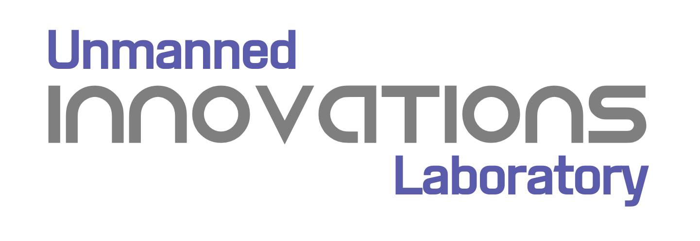
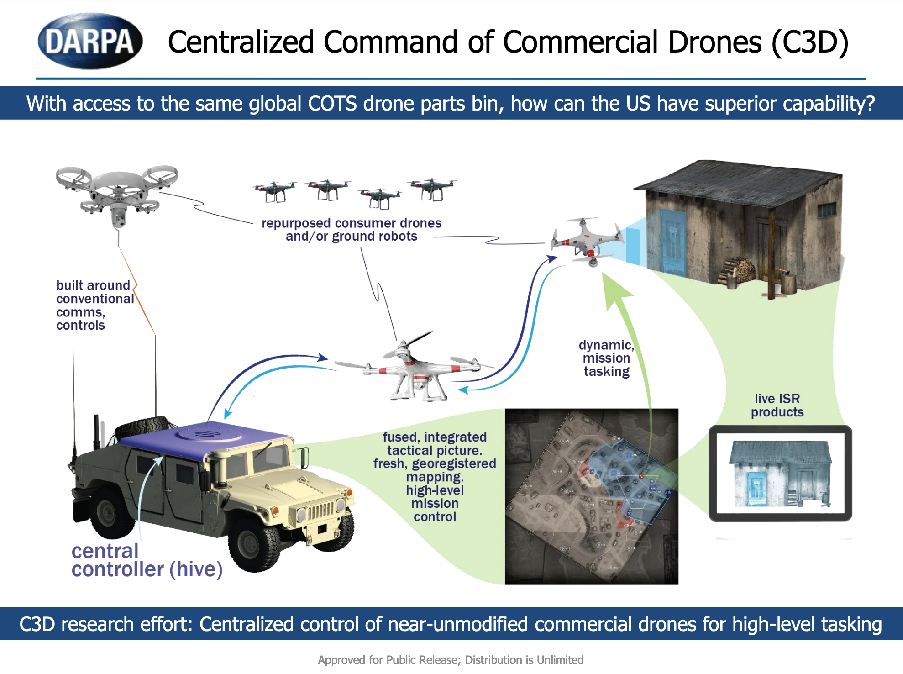
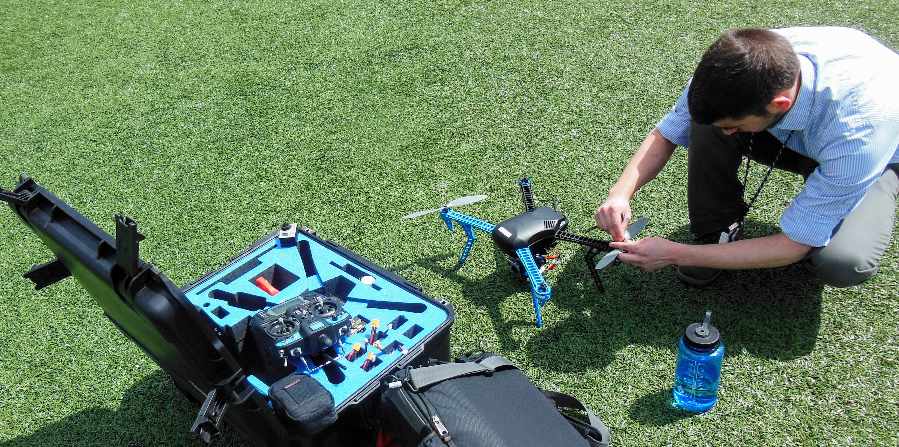

Kyle Usbeck works at Systems & Technology Research (STR) where
he runs the Autonomy Group. He is a senior member of the
Association of Computing Machinery (ACM) and Institute of
Electrical and Electronics Engineers (IEEE).
At Systems & Technology Research (STR), Kyle runs the Autonomy
Group. STR's Autonomy group is primarily focused on collaborative
autonomy and technologies to enable swarms of unmanned systems to
cooperate on shared objectives.

Kyle founded Raytheon BBN Technologies' Unmanned Innovations Lab, which
develops software for unmanned aerial and ground systems,
particularly those operating collaboratively on a common objective (i.e., drone swarms).
At Raytheon BBN Technologies Kyle worked as a Senior Scientist and
Engineer in the Distributed Systems group where he functioned as
the technical lead, principal investigator, and project manager for
several projects.
At BBN Technologies, Kyle is involved in research & development
and business development. The products of he and his teammates such as the
Android Team Awareness Kit (ATAK)
and the Marti Beyond-Line-of-Sight Information
Management System (a.k.a., TAK Server) were transitioned to
military and law enforcement users.
Kyle Usbeck has a Masters of Science and Bachelors of
Science in Computer Science from Drexel University's
College of Engineering. Kyle's thesis, Network-Centric
Automated Planning and Execution, investigates a novel
method of generating, executing, and monitoring automated
plans in dynamic, heterogeneous network environments.
Kyle worked at start-up Drakontas LLC as a Lead Software Engineer.
Drakontas is a company that specializes in communications
software for law enforcement, emergency response, and
security operations. Kyle managed a project for improving
communication between forensic scientists, was the lead
developer for rapid prototyping projects, and was a major
contributor to DragonForce® Situation Awareness
Software Suite.
Kyle conducted research in the Secure Wireless Agent
Testbed (SWAT) laboratory under the direction of
Dr.
William C. Regli. Some of Kyle's research interests
include Artificial Intelligence, Automated Planning,
Multiagent Systems, Networking, HCI, and Mobile Computing.
On a personal note, Kyle enjoys building and flying model airplanes.
He plays piano, guitar, drums, and ukulele. He enjoys recreational
baseball, basketball, soccer, frisbee, golf, and rock climbing.
Command and Control of Aggregate Swarm Tactics (CCAST)
CCAST is a project under the DARPA OFFSET program, which
envisions future small-unit infantry forces using swarms
comprising upwards of 250 unmanned aircraft systems (UASs)
and/or unmanned ground systems (UGSs) to accomplish diverse
missions in complex urban environments.
Centralized Control of Commercial Drones (C3D)

Persistent Close Air Support (PCAS)

Kyle developed tools to control and monitor commercial off
the shelf small unmanned aerial systems via a mobile handheld
situation awareness app.
Mission-driven Tasking of Information Producers (MTIP)
The goal of MTIP is to better utilize airborne sensors via
opportunistic sensor sharing and closed-loop sensor control.
Kyle led a team to create a distributed task allocation
engine for geospatial information collection goals that we
derived automatically from network traffic.
Marti (a.k.a., TAK Server)
Marti is a publish-subscribe information management system
that Kyle helped to create. Marti allows multiple ATAK
instances to communicate when peer-to-peer communications
are not possible and facilitates interoperability between
organizations.
Android Team Awareness Kit (ATAK)
The
Android Team Awareness Kit (ATAK)
is an Android application that provides situational awareness,
mapping/navigation, and communication tools. As a core
developer, Kyle worked with a large multi-organization team to
design, build, test, and refine many ATAK features including
networking, chat, and plug-in support.
Morphogenetically Assisted Design Variation (MADV)
[Maximum Mobility and Manipulation (M3) DARPA DSO]: a
project aimed at improving a framework for the rapid design
of robotic systems using morphogenesis to adapt robot
design.
DARPA META
META [DARPA TTO]: a project to produce an extensible metric
evaluation framework to improve cyber-physical system design.
Quality-of-Service Enabled Dissemination (QED)
Quality-of-Service Enabled Dissemination (QED) [AFRL]: a project
to dynamically provide beyond line-of-sight communications to
decoupled information producers and information consumers on
tactical networks.
Integrated Information and Network Management for End-to-end QoS (IINMEQ)
Network-Centric Exploitation and Tracking (N-CET)
Integrated Information and Network Management for End-to-end QoS
(IINMEQ) / Network-Centric Exploitation and Tracking (N-CET)
[AFRL]: projects whose goals are to dynamically control quality of
service on highly-dynamic airborne networks.
Artificial Intelligence Applications Institute (AIAI)
University of Edinburgh Visiting Member
Kyle studied at the University of Edinburgh and worked in
the Artificial Intelligence Applications Institute. The
purpose of his project was to improve the ability of agents
to construct and choose among autmated plans to be executed in
distributed environments.
Additionally, Usbeck co-organizes the Engineered
Self-Organization seminar series at BBN and has served on the
program committee for several journals and conferences.
Information Ubiquity in Austere Locations. Joseph Loyall, Matthew Gillen, Jeffrey Cleveland, Kyle Usbeck, Joshua Sterling, Richard Newkirk, Ralph Kohler. Ambient Systems, Networks, and Technologies (ANT), 2012. BibTeX
The AI Technologies of the Philadelphia Area Urban Wireless Network Testbed. Gustave Anderson, Andrew Burnheimer, Vincent A. Cicirello, David Dorsey, Christopher Dugan, Iris Howley, Moshe Kam, Joseph Kopena, Robert N. Lass, Kris Malfettone, Andrew Mroczkowski, Gaurav Naik, Maxim Peysakhov, Brian Pyles, William C. Regli, Evan Sultanik, James Thiel, Kyle Usbeck, Dan Venutolo, Marc Winners. AAAI, 2005: 1674-1675. BibTeX
Demonstration of the Secure Wireless Agent Testbed (SWAT). Gustave Anderson, Andrew Burnheimer, Vincent A. Cicirello, David Dorsey, Saturnino Garcia, Moshe Kam, Joseph Kopena, Kris Malfettone, Andrew Mroczkowski, Gaurav Naik, Maxim Peysakhov, William C. Regli, Joshua Shaffer, Evan Sultanik, Kenneth Tsang, Leonardo Urbano, Kyle Usbeck, Jacob Warren. AAMAS, 2004: 1214-1215. BibTeX
Intelligent Systems Demonstration: The Secure Wireless Agent Testbed (SWAT). Gustave Anderson, Andrew Burnheimer, Vincent A. Cicirello, David Dorsey, Saturnino Garcia, Moshe Kam, Joseph Kopena, Kris Malfettone, Andrew Mroczkowski, Gaurav Naik, Maxim Peysakhov, William C. Regli, Joshua Shaffer, Evan Sultanik, Kenneth Tsang, Leonardo Urbano, Kyle Usbeck, Jacob Warren. AAAI, 2004: 1004-1005. BibTeX